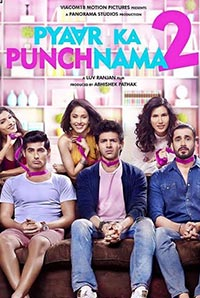

BOOK NOW
PYAAR KA PUNCHNAMA 2 (A) ( Comedy, Drama , Romance ) 80 ♥
Theatrical Trailer
Synopsis
Pyaar Ka Punchnama 2 is the story of 3 unsuspecting bachelors who fall for the girls of their dreams, or so they think, until the dreams are turned into nightmares. Riding the roller coaster ride of relationships, the three are tortured in their own unique, yet relatable ways.
A notch above Pyaar Ka Punchnama, watch a man's 'better half' tear him apart into halves with Pyaar Ka Punchnama 2.
Director: Luv Ranjan
Writer: Luv Ranjan
Musician: Toshi Sabri, Hitesh Sonik, Sharib Sabri
Lead Cast:
Kartik Aaryan
Nushrat Bharucha
Sunny Sharma
Sonalli Sehgall
Omkaar Kapoor
Ishita Raj Sharma
Sharat Saxena